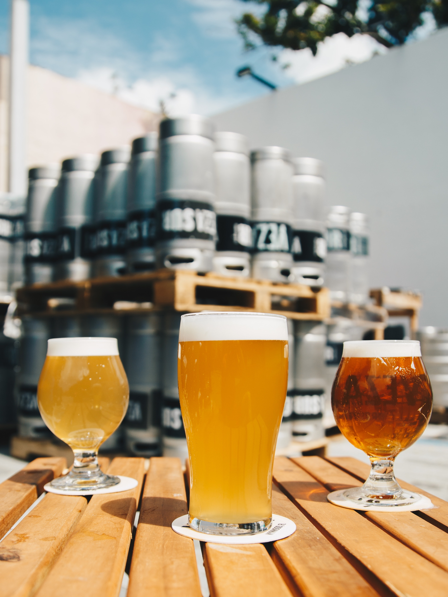

install.packages("quarto")1 Qu’est-ce que Quarto ?
Il s’agit d’un moyen de rendre des fichiers sources en texte qui contiennent du code écrit en Python, R, Observable ou Julia.1
2 Installation
D’abord il faut installer Quarto en suivant les instructions.
Pour éxécuter des fichiers qmd sur Rstudio et pouvoir les prévisualiser, il est nécessaire d’avoir la nouvelle version de RStudio (2022.07) et d’installer le package Quarto.
Maintenant on peut créer directement un nouveau fichier qmd dans File > New File > Quarto document.
3 Principales différences entre R Markdown et Quarto
Il faut appeler rmarkdown depuis R pour l’utiliser. Cela signifie que, par exemple, un utilisateur de Python doit effectuer des installations supplémentaires.
Au lieu d’être un package R,
Quartoest un logiciel distinct, que l’on peut appeler depuis la ligne de commande. Cela signifie que d’autres logiciels peuvent l’utiliser pour créer leurs propres documents de programmation lettrés. Le packagequartoa pour but essentiel de faciliter l’intégration dequartoà Rstudio.
4 Les avantages
Alors que les documents RMarkdown utilisent
Retknitrpour compiler le document,Quartoexécute chaque bloc (chunk) avec des engins différents ce qui permet de mélanger les langages de programmation et d’obtenir des documents reproductibles.Quartodécoule directement deRMarkdownce qui explique les faibles différences en terme d’implémentation.Pour compiler un livre,
Quartosemble être beaucoup plus cohérent queRMarkdownconcernant la configuration. Par exemple, au lieu d’avoir un fichier _bookdown.yml spécifique au bookdown qui nécessite également un fichier _output.yml, il ne requiert qu’un seul fichier _quarto.yml.
Note
Rmarkdown reste très actif et ne sera pas obsolète dans un futur proche !
5 Transformer un .Rmd en .qmd
Il suffit de changer l’extension de notre fichier. Le code ci-dessous permet d’identifier les fichiers .Rmd et modifier leur extension en .qmd (code issu du blog de Nick Tierney)
```{r}
#| eval: false
library(fs)
library(stringr)
rmd_names <- dir_ls(path = ".", glob = "*.Rmd")
qmd_names <- str_replace(string = rmd_names,
pattern = "Rmd",
replacement = "qmd")
file_move(path = rmd_names,
new_path = qmd_names)
```Il faut également changer les options du chunk global
---
title: "We don't talk about Quarto"
subtitle: "Until now!"
execute:
echo: false
---à la place de
```{r, eval=FALSE}
knitr::opts_chunk$set(echo = FALSE)
```6 Coder en R et en python dans un même script
6.1 Récupération de variables R dans un code Python
Afin d’utiliser Python, il faut définir dans Tools --> Global Options --> Python la version que l’on souhaite utiliser.
Tip
Il est possible d’utiliser un environnement Conda.
On souhaite récupérer une variable R et l’utiliser dans un calcul Python. Par exemple, on considère la variable a :
```{r, eval = TRUE}
a = 1:30
```Pour coder en python, préciser {python} au début de la cellule. On récupère le premier élément du vecteur a :
```{python, eval = TRUE}
print('a[0] = ', r.a[0])
b = r.a[0] + 1
print('b = ', b)
```a[0] = 1
b = 26.2 Récupération de variables Python dans un code R
Il faut charger le package reticulate afin de pouvoir récupérer les valeurs de sortie d’une variable
Python depuis R.
```{r}
library(reticulate)
```Reprenons les variables a et b de l’exemple précédent. Pour utiliser un objet python avec R, il faut appeler l’objet avec “py$” devant. On définit la variable c qui dépend de la variable Python b et du premier élément de la variable R a :
```{r, eval = TRUE}
c = py$b + a[1]
print(paste0('c=', c))
```[1] "c=3"6.3 Séparer la page en plusieurs parties verticales
On peut également faire un tableau de texte : couper la page en plusieurs parties (ici à la moitié), pour y insérer du texte en colonne.
Et voici la deuxième moitié. Cela nous permet d’avoir deux blocs et comparer des scripts entre eux par exemple.
Le code correspondant est le suivant :
:::: columns
::: {.column width="50%"}
On peut également faire un tableau de texte : couper la page en plusieurs parties (ici à la moitié), pour y insérer du texte en colonne.
:::
::: {.column width="50%"}
Et voici la deuxième moitié.
:::
::::6.4 Beaucoup de choses ne changent pas …
6.4.1 Faire des diagrammes en mermaid
flowchart LR
A[Hard edge] --> B(Round edge)
B --> C{Decision}
C --> D[Result one]
C --> E[Result two]
flowchart LR
A[Hard edge] --> B(Round edge)
B --> C{Decision}
C --> D[Result one]
C --> E[Result two]
6.4.2 Insertion d’images
On peut insérer des images via le code
::: {layout="[[80], [1,1]]"}
{#micro}
{#biere}
{#gateau}
:::qui donne le résultat:


6.4.3 Insertion d’une carte
```{r}
#| column: screen-inset-shaded
library(leaflet)
leaflet() %>%
addTiles() %>%
addMarkers(lng=2.3476575, lat=48.8397733, popup="The birthplace of R")
```7 Site web & déploiement avec intégration continue
Créer un
Quarto Websitevia l’interface RStudioChoisir le moteur
KnitrDéfinir le projet comme git repository
Utiliser
renvpour la gestion des package
Le site est créé avec l’architecture suivante
.Rprofile: Rproj.Rproj.user/: Rproj de l’utilisateur.git/: le repository.gitignore: les fichiers ignorés par git_quarto.yml: l’arborescence du siteabout.qmd: une page du sitedemoQuarto.Rproj: Rproj du projetindex.qmd: une autre page du siterenv/: dossier de gestion des packagerenv.lock: liste des package utilisé par le sitestyles.css: feuille de style
Créer le dépôt public correspondant sur GitHub.
- Attention a ne initialiser le repository !
Commit tous ces fichiers et les push
git remote add origin git@github.com:CedricMidoux/demoQuatro.git git add * git commit -m "init" git push --set-upstream origin mainExclure le dossier de preview dans
.gitignore.Rproj.user .Rhistory .RData .Ruserdata /.quarto/ _site/Ne pas utiliser Jekyll
touch .nojekyllCommit & Push
git add .nojekyll .gitignore git commit -m "config" git pushSur GitHub, créer une branche
gh-pageset s’y référer dans les GitHub Pages
Ajouter les GitHub Actions dans le fichier
.github/workflows/publish.ymlon: workflow_dispatch: push: branches: main name: Quarto Publish jobs: build-deploy: runs-on: ubuntu-latest permissions: contents: write steps: - name: Check out repository uses: actions/checkout@v2 - name: Set up Quarto uses: quarto-dev/quarto-actions/setup@v2 - name: Install R uses: r-lib/actions/setup-r@v2 with: r-version: '4.2.0' - name: Install R Dependencies uses: r-lib/actions/setup-renv@v2 with: cache-version: 1 - name: Render and Publish uses: quarto-dev/quarto-actions/publish@v2 with: target: gh-pages env: GITHUB_TOKEN: ${{ secrets.GITHUB_TOKEN }}Commit de ce fichier
git add .github/workflows/publish.yml git commit -m "add publish.yml" git pushDésormais, à chaque commit sur
mainle site est construit sur la branche
gh-pagesil est accessible à l’url https://<USER>.github.io/<REPO>/
Point sobriété numérique, il est préférable de travailler sur une branche de développement et de merge sur
mainque pour les évolutions majeurs. Ainsi on évite de reconstruire le site systématiquement.
On peut maintenant par exemple ajouter une nouvelle page
plot.qmd.--- title: "Plot" --- ```{r} library(palmerpenguins) library(ggplot2) ggplot2::theme_set(ggplot2::theme_minimal()) ``` ## Jouons avec les Pingouins ! ```{r} mass_flipper <- ggplot(data = penguins, aes(x = flipper_length_mm, y = body_mass_g)) + geom_point(aes(color = species, shape = species), size = 3, alpha = 0.8) + scale_color_manual(values = c("darkorange","purple","cyan4")) + labs(title = "Penguin size, Palmer Station LTER", subtitle = "Flipper length and body mass for Adelie, Chinstrap and Gentoo Penguins", x = "Flipper length (mm)", y = "Body mass (g)", color = "Penguin species", shape = "Penguin species") + theme(legend.position = c(0.2, 0.7), plot.title.position = "plot", plot.caption = element_text(hjust = 0, face= "italic"), plot.caption.position = "plot") mass_flipper ```- On y réfère dans
_quarto.yml
project: type: website website: title: "demoQuarto" navbar: left: - href: index.qmd text: Home - href: plot.qmd text: Penguins - about.qmd format: html: theme: cosmo css: styles.css toc: true- On ajoute les dépendances à
renv
renv::snapshot()- On s’assure que tout est ok avant de commit
quarto::quarto_preview()- On commit
git add _quarto.yml renv.lock plot.qmd git commit -m "création de la page plot avec les pingouins" git push- On y réfère dans
- Limites identifiées : avec ce workflow, R est réinstallé à chaque fois, il serait préférable d’utiliser un docker comprenant déjà R, tidyverse et renv. De plus, en l’état, chaque page est reconstruite à chaque commit.
Footnotes
https://quarto.org/docs/guide/↩︎